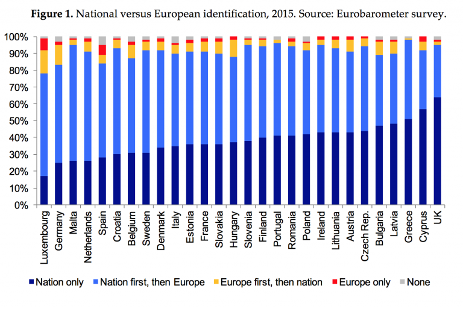

Opposition to the membership in the EU has existed within the British people ever since the United Kingdom joined in the 1970s. It has remained substantial ever since, being somewhere between 30% and 60%, and has fluctuated to that maximum in recent years.
When the EU began to experience a rapid amount of immigration, support for an exit from the EU significantly increased. Support for an exit was also influenced by the Eurozone debt crises - with mass unemployment across Southern Europe, because these countries were heavily in debt. Therefore, because Britain was in the EU, the country was partially responsible for helping the other counries in debt. This made British citizens angry for having to carry the burden of supporting other countries because they were in the European Union.
 A very huge factor that plays in the constant support of a secession from the EU is the sense of European identification in the UK. The UK really stands out, as it is ranked 28 out of 28 for European identity - it is also rated first for the percentage of people that identify as "nation only."
Now, the UK Independence Party in light of mass immigration patterns to the UK grew in success in recent years.
The UK Independence part gave many reasons why Britain's best interest would be to enact Brexit. They said that the EU imposed too many rules on business and that the return for the expensive fees of membership was far too small. Immigration, again, led the Party to advocate for Britain to takefull control of its borders, and reduce the number of people coming to live and/or work.